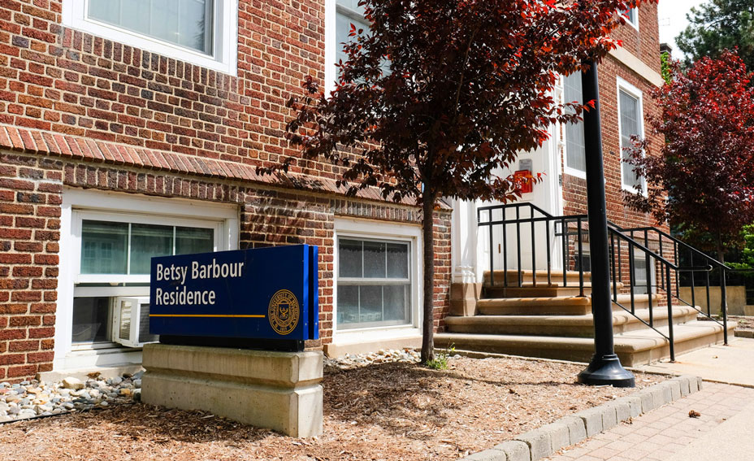
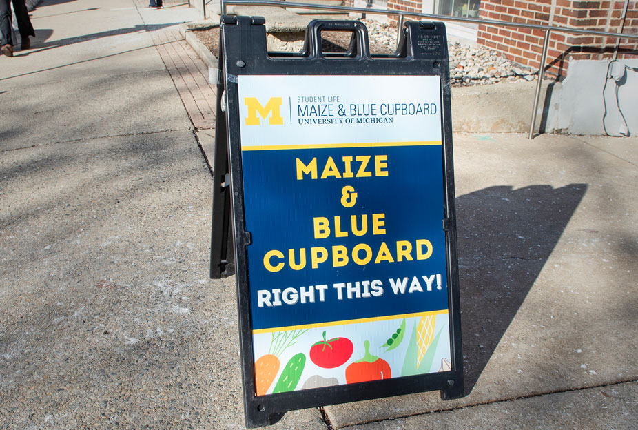

WHO WE ARE
A food pantry for students and staff experiencing food insecurity. Our goals is to provide individuals access to healthy and nourishing food in order to support peoples wellbeing.
OUR RESOURCES
Our food pantry is constantly being stocked. We offer a variety of resources to provide individuals with basic needs.
MAKE AN APPOINTMENT
In order to pick up goods at the Maize and Blue Cupboard, an appointment is required. Appointments can be made by going to our sign up page.
If an appointment is not made, it is no worries, at the door, there is a QR code that can be scanned which then allows people to make same-day appointments.
HOURS OF OPERATION
Sunday: 2pm-6pm
Monday - Thursday: 3pm-7pm
Friday: 12pm-7pm
Saturday: CLOSED
LOCATION
Building: Betsy Barbour Residence Hall
Room: Basement
Entrance: Maynard entrance, in order to ensure privacy of students
Address: 420 S State St Ann Arbor, MI 48109
Note: The Maize and Blue Cupboard is located in the basement of Betsy Barbour Residence Hall. The entrance is located on Maynard Street, which is the back of the building. There is a sign that says "Maize and Blue Cupboard" near the entrance.
